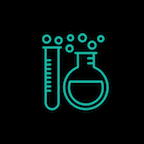

Science
Science is my religion. It is driven by curiosty and grounded in observation. Through years of schooling and research, these two overarching themes have become the foundation for my worldview. Doing science - the collaboration, communication. Making it into a story, but for a very specific audience.Thinking big, understanding that everything is connected.
Education
Just doing and loving science was not enough. Communicating that passion to others presented a completely new challenge. Teaching science to 13 year olds in a public NYC middle school taught me how to make science into a story. Know your audience. Do whatever it takes to grab their attention, and then hold their interest. They have to be interested in order to learn, in order to fully experience the world being thrown at them.
UX Design
I approach every design project with completely open eyes and ears. It is my job to see what's not there and to hear what's not said in order to create something that is filled with meaning and purpose. I watch and listen and then put all the pieces together, in many different ways, until the final product produces positive change for all parties involved.